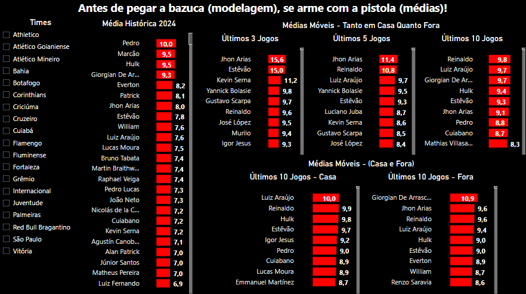
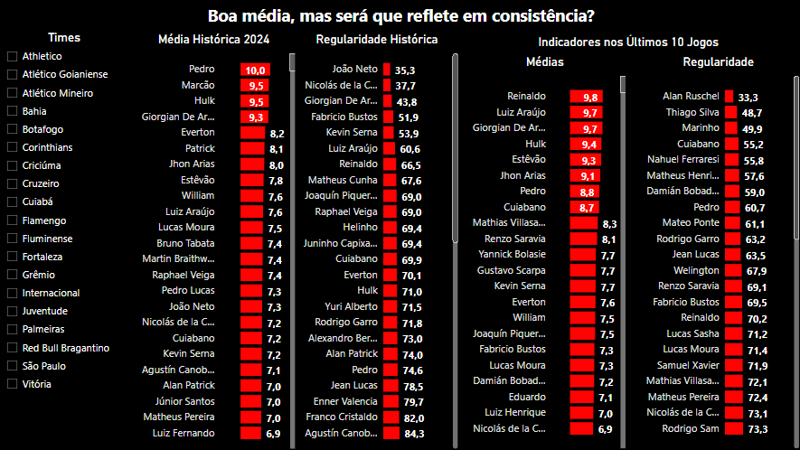
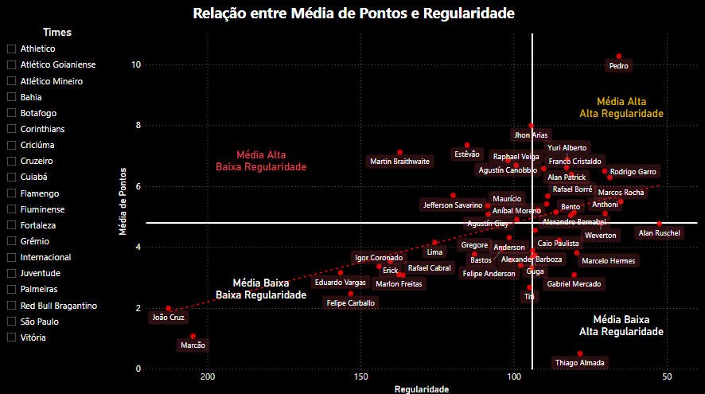
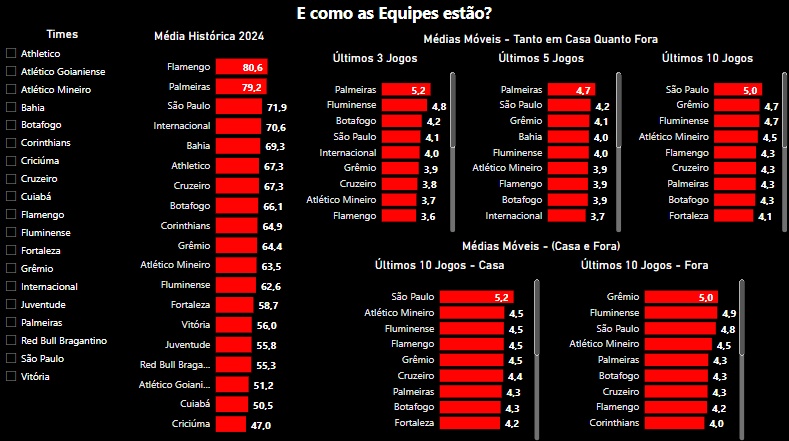
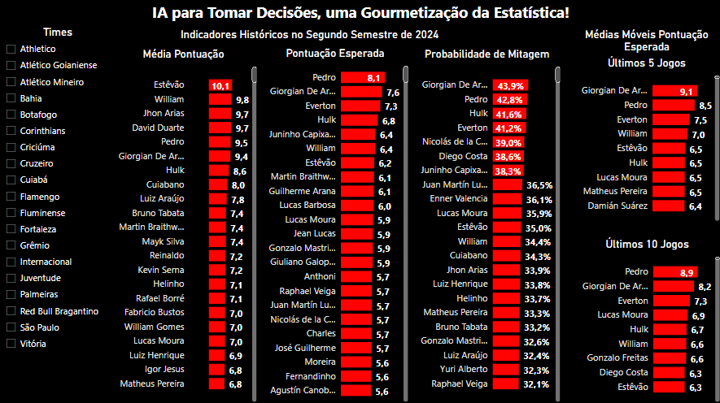
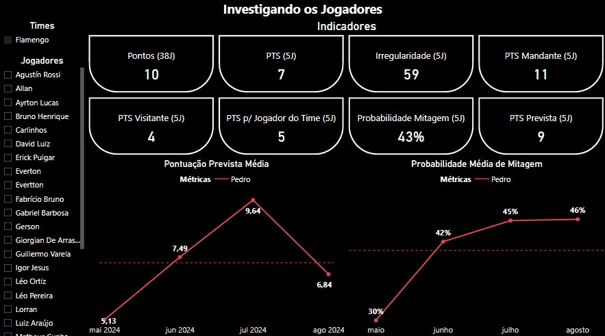

Um resumo do post!
Neste post, você vai aprender boas práticas para tomar melhores decisões, usando algumas ferramentas, dicas e dados, que podem agregar em todas as áreas da sua vida. E se seu interesse é Cartola FC e futebol, pode se guiar pelos tópicos que têm muito assunto legal!
Tomar Decisões com Dados!
A Importância de Tomar Decisões usando Fatos!
Por que usar fatos e dados para tomar decisões, se podemos apenas invocar nossa boa e velha intuição para isso? Pois então, na grande maioria das vezes, nossa intuição nos prega peças, não sendo tão efetiva e precisa. Nossas decisões são baseadas em experiências e memórias passadas que podem ser incompletas e imprecisas. Além disso, são influenciadas por nossos preconceitos e julgamentos. Alguns exemplos do dia-a-dia:
- Decidir não contratar alguém porque “não gostei da primeira impressão”, mesmo que o candidato tenha todas as qualificações necessárias.
- Evitar um determinado time no Cartola FC apenas porque começou mal o campeonato, ignorando estatísticas atualizadas.
- Uma pessoa pode continuar comprando a mesma marca de cereal por hábito, sem considerar novas opções ou melhorias no mercado.
Logo, usar informações para pautar suas decisões, na sua vida pessoal, no seu negócio, na sua profissão, nas suas atividades de lazer como o Cartola ou jogando um EAFC (FIFA), se torna fundamental!
Dicas para tomar melhores decisões!
- Use fatos e dados, e não apenas a intuição!
Se há dados, podemos usar para tomar decisões. E se não há, vamos em busca deles!
- Diminua as escolhas, se guie por poucas, mas efetivas soluções
E aquela sensação de ter que escolher entre inúmeros jogadores no seu Cartola, múltiplos filmes na plataforma de streaming, a indecisão pode imperar e você desistir antes de agir. Assim, uma boa tática é se limitar apenas às escolhas essenciais, como, por exemplo, qual time pode me proporcionar as melhores opções de jogadores para escalar, ou qual tipo de filme/série com qual temática quero assistir?
- Decisões mais importantes no início e não no final do dia
Repare que, ao longo do nosso dia, tendemos a tomar as melhores decisões no início, uma vez que estamos mais descansados do que ao final, após inúmeros eventos acontecerem. Tome como exemplo quando você começa o dia cumprindo fielmente bons hábitos de alimentação ou de saúde, mas que, ao final do dia, se permite comer algum alimento hipercalórico, procrastinar uma atividade, adiar uma atividade física etc.
- Volte a primeira dica e complemente os fatos observados com sua intuição
Só fatos ajudam? Sim, e muito, mas é sempre relevante unir o fato com um contexto e experiência no tema. Um exemplo bem legal é que, segundo pesquisa, toda vez que o ator Nicolas Cage aparece em um filme, as pessoas se afogam na piscina. É preciso ter o mínimo de entendimento da realidade para perceber que uma coisa não tem nada a ver com a outra. Assim, é importante questionar os fatos, ter o mínimo de entendimento do assunto abordado.
Um Exemplo Prático no Cartola FC!
Como Eu Tomava Decisões no Cartola Sem Nenhuma Ferramenta?
Jogo Cartola há muito tempo, e foi rotineiro antes de cada rodada eu fazer as seguintes ações: abrir o aplicativo, ir da posição de ataque até a comissão técnica, ordenar os jogadores pela maior média e assim começar a escolher como prioridade do maior pontuador médio para o menor, de olho nos times que eu achava favoritos, fazendo um balanceamento com o valor dos jogadores, é claro.
Mesmo seguindo essa rotina, eu sempre procurava 2-3 jogadores fora do radar geral da galera para tentar de alguma forma surpreender, seja vasculhando por algum histórico recente de atuação, seja apenas por intuição mesmo. Algo que sempre fiz foi priorizar os jogadores que atuavam em casa, mas às vezes optando por algumas surpresas fora de casa.
Essa maneira de escalar me retornava uma boa pontuação média ao longo das rodadas: algumas rodadas mitando, outras fazendo pouco mais que a média, e algumas raras pontuando muito pouco.
Porém, ainda há muitos vieses nesse processo decisório. Ao ordenar os jogadores do maior para o menor pontuador médio, por exemplo, frequentemente poderia surgir algum nome que eu teria predisposição a escalar, seja por subconscientemente gostar do jogador, ter uma memória de ter mitado com ele em rodadas passadas, ou até mesmo por ver o nome dele circular muito nas redes sociais.
Repare que por isso, às vezes, podemos escalar sob um viés chamado de ancoragem, onde refletimos nossa escolha com base em uma experiência passada que não é baseada em puro fato de performance, mas sim por outros tipos de situações.
Além desse viés, ainda há muitos outros que podem nos perseguir. Logo, quanto mais ferramentas objetivas tivermos à nossa disposição para tomar decisões, menos estaremos expostos aos nossos vieses e julgamentos.
Como Eu Escalo Atualmente?
Médias, Várias Delas!
Os dados a seguir estão atualizados até o dia 27/09/2024, com informações dos jogadores não só do Brasileirão, mas também dos outros campeonatos disputados. No processo de escolhas, não vou me ater neste momento a fatores como times que estão disputando mata-mata e podem poupar.

Antes de invocar qualquer técnica estatística avançada, a média já nos serve muito! Mas ela deve ser vista de diferentes perspectivas para nos dar o máximo de informação possível, não apenas de uma maneira geral. No entanto, inicialmente, gosto de começar por ela.
Podemos perceber que o campeão histórico de pontos até o momento seria o Pedro, com certeza seria figurinha carimbada na nossa escalação da rodada! No entanto, para confirmarmos esse jogador, poderíamos especificar ainda mais nossa análise, verificando, por exemplo, se o atleta está jogando como mandante ou visitante e comparar com a média histórica. Além disso, a média histórica é muito interessante para vermos o quão o atleta a longo prazo foi efetivo, porém, é interessante também combinar a análise com um histórico mais recente, comparando a performance do atleta nos últimos 3, 5 e 10 jogos, por exemplo, identificando possíveis quedas de rendimento dos jogadores e jogadores que nos últimos jogos vêm se destacando mais.
Nesse sentido, quando alinhamos a média do Pedro nos últimos 10 jogos em casa, ele permanece no topo. Porém, quando vamos confirmar esse desempenho nos últimos 5 e 3 jogos, independentemente do local, ele não aparece, evidenciando outras boas opções de jogadores que aparecem como destaques recentes, como o Bolasie, Estevão e Luiz Araújo.
Arias se mostra uma excelente opção, porém há um detalhe sobre ele que uma média vista de outro modo nos mostra. No desempenho médio nos últimos 10 jogos em casa, ele não aparece no topo das melhores opções. Porém, aparece como a segunda melhor opção quando joga fora de casa. Essa é uma das vantagens de visualizar a média de diversas formas. Outro jogador interessante é o Reinaldo, que nem sequer aparece na média histórica, porém é figurinha carimbada em todos os outros rankings de média: em casa, fora, nos últimos 3, 5 e 10 jogos, mostrando uma ascensão!
Um dos Problemas da Média
Beleza, você me diz que a média já é uma grande ferramenta para tomar decisão? Mas agora já aponta problemas, no plural? Há algumas coisas que apenas a média não é capaz de informar, mesmo que de fato ela salve vidas. Imagine se você tivesse 10 valores da pontuação de um jogador e não pudesse realizar a média para decidir se escala ou não determinado atleta. Seria caótico. Agora, imagine que você tem 10 valores de pontuação para todos os jogadores do Brasileirão… E assim, há tanta informação que você prefere fechar o aplicativo do Cartola e ir comer alguma coisa hipercalórica para compensar esse estresse, e olha que eu falei em apenas 10 valores.
Mas então, qual seria o problema da média? Um primeiro problema é a possibilidade de que um jogador, em 3 partidas, tenha pontuado 1, -1 e 18 pontos. Repare que a média dele é de 6 pontos por jogo. Há um problema nisso, pois existe uma discrepância; ainda há uma irregularidade no desempenho. É diferente de um mesmo jogador que pontuou 5, 6 e 7 pontos e tem média de 6. Em quem você confiaria mais para garantir pontos? Repare que ilustrei um cenário de apenas 3 jogos, mas esse fenômeno também é difícil de identificar quando temos muitos dados de um mesmo jogador.
Agora que vem a parte legal: há uma medida muito interessante chamada coeficiente de variação. Ela nada mais é que o desvio padrão dividido pela média. Quanto maior for o valor, mais irregular o jogador é ao longo de um período de tempo. E, por consequência, quanto menor, mais regular ele é. Isto é, é uma medida que nos diz o quão consistente e confiável aquela média de pontos do jogador é. Um outro ponto positivo dessa medida é que podemos multiplicá-la por 100 e interpretá-la como um valor percentual, tornando-a ainda mais intuitiva! Agora, chegou meu momento! (primeira vez que faço isso no site). Já há um post no site que fala bastante sobre o coeficiente de variação, acesse lá! Link. Além desse, há também outro em que exemplifico na prática um momento de alta regularidade de um time de futebol. Link. Agora, vamos para os visuais!

Suponha que chegamos a uma rodada onde temos um número limitado de cartoletas e você analisou que gostaria de contar muito com o Hulk ou Arrascaeta, com médias históricas de 9.5 e 9.3 pontos, respectivamente. Repare que são bem semelhantes. Algo que poderíamos invocar agora é nossa intuição, já que sabemos que são semelhantes: qual eu acho que poderia ir bem? Repare que, por enquanto, eu não quis invocar o uso das médias móveis (últimos 10 jogos) como um possível desempate, para salientar que, em determinados momentos, podemos usar o fato de que os dados evidenciam nossa própria opinião.
Mas agora iremos requisitar a medida discutida, o famoso coeficiente de variação (CV). No gráfico intitulado “Regularidade Histórica”, os jogadores estão ordenados do mais regular ao mais irregular, uma vez que já comentei que quanto menor o valor, mais regular o atleta é ao longo do período analisado. Nesse visual, realizei um filtro dos 50 jogadores que possuem maior média histórica e, a partir daí, gerei o ranking. Entre os mais regulares estão João Neto e De La Cruz, com um CV menor que 40%. Porém, ambos têm uma pontuação histórica que não excede 7.3 pontos. É importante salientar que eles são muito regulares, mas nessa faixa específica de pontuação, é esperado que, ao longo de seus jogos, eles sejam muito consistentes nesse nível de pontuação. Repare que um CV baixo não significa que o jogador desempenha muito bem no Cartola, uma vez que a regularidade dele pode ser boa, mas a pontuação pode ser baixa, resultando em uma frequência regular na medíocridade. Confira uma ilustração no gráfico abaixo.

Voltando para nosso exemplo: quando confrontamos o Hulk e o Arrascaeta na regularidade, há uma grande diferença. O Arrascaeta é o terceiro jogador mais regular, sendo cerca de 30% mais consistente que o Hulk. Na prática, para jogadores que são mais irregulares, há muitos fatores que os tornam assim, como condições específicas para que pontuem naquela média, momentos bons da equipe, fase boa do próprio jogador, situações favoráveis dentro de jogo, fatores psicológicos, etc. São inúmeros os fatores possíveis para que um jogador seja irregular ao longo do tempo. Por outro lado, jogadores mais consistentes tendem a se adaptar a qualquer tipo de situação e a manter aquela média específica.
Assim sendo, sem o uso de qualquer outra informação, a escolha do Arrascaeta seria a mais adequada, a menos que você tenha uma outra evidência mais forte que possa estar a favor do Hulk. De outro modo, quando olhamos ambos os jogadores pela visão dos últimos 10 jogos, vemos que o desempenho médio deles ainda não difere. Porém, o Arrascaeta, que no período histórico era bem regular, passa nesse período por oscilações, uma vez que ambos os jogadores nem aparecem no topo do visual de regularidade, onde o Arrascaeta apresenta um CV de 85%. Assim, quais jogadores nos dariam tanto uma boa média quanto regularidade ao mesmo tempo? Cuiabano e Pedro seriam nossas respostas, uma vez que apenas os dois jogadores figuram no top 10 de ambos os critérios.
Um detalhe interessante é o Thiago Silva, que, após sua volta ao Fluminense, foi retratado na mídia como tendo uma grande virada de chave no time. A regularidade dele nos últimos 10 jogos evidencia isso, sendo de 48%. E, mesmo que ele não apareça no top dos jogadores que mais pontuam, com 5.9 pontos de média, ainda sim é um grande marco, uma vez que ele atua como zagueiro.
Reduzindo as Possibilidades de Escolha
Este poderia ser um dos primeiros tópicos deste post, antes da média dos jogadores. Mas não seria tão legal e cativante começar por ele. Uma maneira de direcionar nossas análises para quais jogadores escalar vai em direção a algo ainda maior do que os atletas individualmente: o conjunto deles, o time! Muitas vezes, sem qualquer tipo de análise elaborada, me vi começando a montar minha escalação a partir dos times mais favoritos da rodada, pegando de dois a três jogadores de cada um deles. Porém, às vezes nossa concepção de favoritismo é suja pelos nossos vieses. Um exemplo simples é o fator clubismo, onde podemos subestimar a performance do nosso próprio time.
Uma maneira de especificarmos nosso olhar para os times é fazer como na análise dos jogadores: olhar para a média histórica, nos últimos jogos, como mandante, como visitante e, por fim, nossa métrica de regularidade! Veja o visual a seguir.

No visual de média histórica 2024, temos a média da pontuação do time de maneira coletiva. Nos demais visuais, temos a média por jogador da equipe. Assim, já podemos minimizar algumas escolhas especificando nossa análise. Olhando para os últimos cinco e três jogos, Palmeiras e Fluminense são boas opções para explorar. O São Paulo também seria um bom destaque; mesmo que tenha liderado nos últimos jogos e caído de rendimento, ele aparece entre os principais times em todas as médias móveis.
Por outra ótica, o Grêmio fora de casa é uma opção que pode ser bem vista, tendo uma boa média nos últimos dez jogos. Fluminense e São Paulo, que já foram citados, também são destaques nesse quesito. Por outro lado, jogando em casa, além do São Paulo, Atlético-MG e Flamengo também seriam bons destaques. Dito isso, podemos mergulhar nos jogadores dessas equipes, formando boas possibilidades de escalações!
No entanto, tome cuidado, pois podem haver times que coletivamente não estão indo bem, que podem ter um ou dois jogadores potenciais que acabam carregando o time. Assim, caso tenha mais tempo, pode começar a investigar esses jogadores. Posteriormente, em outros posts, vamos trazer algumas métricas para facilitar e evidenciar esses jogadores!
A mina de ouro, o poder da IA, que nada mais é que Estatística…
Conforme ressaltei, a média é muito útil e quanto mais formas você utilizar, mais útil ela será! No entanto, quando nosso objetivo é formular uma análise de modo que possamos fazer as melhores escolhas em situações complexas, como um jogo de futebol, onde muitos fatores interferem nos resultados das partidas, podemos requisitar técnicas mais avançadas. Na grande maioria das vezes, essas técnicas são mais eficientes e embasadas do que apenas usar a média a olho nu, como os métodos de modelagem preditiva!
Um dos motivos para usar modelagem é que, quanto mais informações temos à nossa disposição para tomar decisões, mais podemos tender a sobrecarregar nossa mente e não considerar todas as variáveis, nos prendendo apenas àquela que nosso cérebro intuitivamente dá um peso maior. Por exemplo, eu posso ter todas as informações de médias que já exemplifiquei, mas posso tender a confiar mais na média histórica, ignorando outros elementos. Então, para tentar escolher o melhor jogador possível, quais seriam as variáveis de maior importância? Será realmente a média histórica, a média nos últimos 10 jogos? Regularidade? A modelagem considera tudo isso e ainda mais em suas previsões, coisa que o cérebro humano não conseguiria ponderar e encontrar a melhor solução possível.
A modelagem nos permite incluir o máximo de fatores possíveis que possam impactar na performance do atleta no Cartola, como a pontuação média do jogador, da equipe e até do adversário nos últimos 3, 5, 10, 38 jogos, tanto jogando em casa, fora ou no geral. Podemos adicionar também as variáveis mencionadas de regularidade e muitas outras, a criatividade e o conhecimento futebolístico podem e devem ser explorados. No fim, você terá as variáveis mais importantes para prever uma futura pontuação, gerando visuais dos jogadores com maior probabilidade de mitar na rodada, ou então os jogadores com maior pontuação esperada.
Aqui ainda não vou me aprofundar nos detalhes de como fazer um modelo preditivo, mas sim explicar do que ele é capaz. Mas será que devemos confiar cegamente no modelo preditivo? Então, como mencionado, no momento de tomar uma decisão temos nossos vieses e julgamentos. Quando terceirizamos isso para um modelo, reparamos que as variáveis que adicionamos no nosso modelo também são baseadas nos nossos julgamentos. Porém, o modelo consegue selecionar a melhor combinação das variáveis e quais mais ajudam a prever de forma efetiva os jogadores potenciais. Ainda há outro fator a considerar: nem sempre na vida temos acesso a todas as informações possíveis para tomar uma decisão. Por exemplo, não temos a informação da qualidade do treinamento do jogador antes de uma rodada, variável que poderia ser importante para prever o desempenho dele. A questão mental do jogador, as ideias de jogo do técnico para determinadas partidas e por aí vai. O modelo não considera isso porque não há essa informação. Na prática, isso pode ser chamado de efeito aleatório que o modelo não consegue captar. Além disso, uma boa prática importante é unir as recomendações dos jogadores com maior potencial identificados nos modelos com suas opções previamente selecionadas a partir de uma análise das médias ou palpites intuitivos. Uma outra abordagem é, a partir das recomendações, começar a analisar as opções possíveis, limitando seu processo de escolha, diminuindo o tempo que passa cruzando informações e indo diretamente aos jogadores potenciais.
Em sequência, apresento um visual com resultados da modelagem ao longo de várias partidas, no segundo semestre de 2024.

Usando modelos preditivos, conseguimos prever de dois modos: a probabilidade de algo acontecer ou um valor numérico, como a pontuação do jogador. Conseguimos realizar a previsão antes dos jogos acontecerem com base em dados passados. No visual abordado, temos a pontuação média histórica no período, onde o Estevão lidera com 10.1 pontos. Em seguida, temos uma média da pontuação esperada (ou prevista) dos jogadores por um tipo de modelo, onde o jogador que tem maior esperança de pontuar bem é o Pedro, com 8.1 ao longo das rodadas. Repare que, confrontando a pontuação esperada dele com a pontuação real, temos que a real é de 9.5. Então, na prática, ao longo das rodadas, a pontuação dele foi subestimada a partir das variáveis incluídas no modelo. Assim, ele, de certa forma, surpreendeu ainda mais o modelo ao longo do tempo, uma vez que na média selecionamos o Pedro mais vezes para cogitar sua escalação.
Além do Pedro, há outros jogadores como o Arrascaeta, que aparecem como os identificados pelo modelo ao longo do tempo com maior possibilidade de pontuar bem nas rodadas. Lembrando que esses jogadores indicados tiveram suas pontuações estimadas a partir de resultados passados, sendo assim, o modelo não sabia de nada do jogo atual antes de realizar a previsão, uma informação muito importante que pode passar desapercebida.
Outra forma de visualizarmos os jogadores com maior potencial de irem bem nas rodadas é a partir da probabilidade. Em outro visual, podemos ver qual o percentual de chance médio dos jogadores no período ‘mitarem’ nas rodadas. Arrascaeta lidera com 44%, seguido pelo Pedro e Hulk. Repare que essas indicações são diferentes da pontuação esperada, uma vez que cada tipo de modelo pode considerar diferentes variáveis como mais relevantes para o que se deseja prever. O interessante é que conseguimos juntar diferentes opiniões de processos decisórios robustos para, no fim, junto com nossa visão de mundo, tomar melhores decisões.
Investigando Jogadores!
Ao passar por todas essas etapas decisórias, no final podemos ainda ficar com dúvida na escolha de um jogador. O que podemos fazer é chegar no nível parça do Neymar! No visual a seguir, podemos especificar o jogador e mergulhar em mais alguns detalhes para complementar nossa decisão final.

Como podemos ver, conseguimos entrar em mais alguns dos muitos detalhes dos jogadores. Um deles é verificar como está o desempenho médio das métricas, como pontuação em casa e fora, nos últimos 5 jogos. Além disso, conseguimos ver a pontuação prevista e a probabilidade de mitagem ao longo dos meses. No mês de agosto, por exemplo, o modelo alerta uma queda no desempenho esperado do jogador, podendo ser levado em consideração ao longo desse período na escalação dele ou de outro jogador que possa estar em ascensão.
Conclusão
Dito isso, quanto mais informações relevantes reunirmos e mais recursos, como a modelagem, tivermos em mãos, mais simples e eficazes serão nossas decisões. Tudo isso usando fatos e dados, sem deixar de fora todo o nosso conhecimento da área, neste caso, o futebol e o Cartola FC! Em qualquer área de decisão, lembre-se de que os conceitos abordados podem ser expandidos para além dela, no seu empreendimento, profissão, produtividade etc.